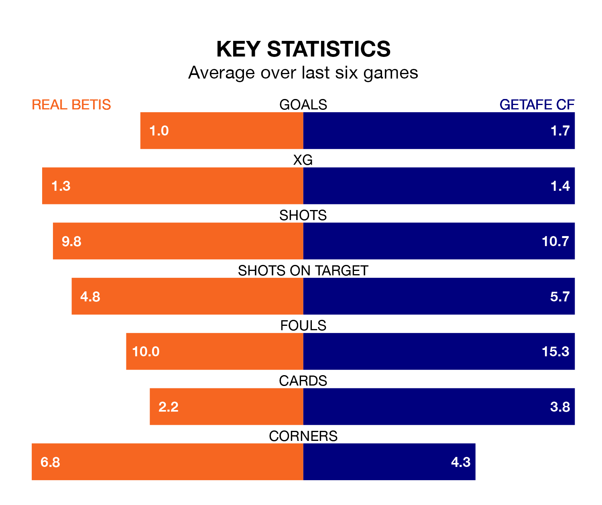

Getafe CF travel to Real Betis on late Sunday in La Liga.
The visitors come into the game on the back of a defeat in their last match, having lost to Real Madrid 2-0 at home.
Betis, meanwhile, won their last match, 1-0 against RCD Mallorca, with their goal scored by Sergi Altimira Clavell.
In Borja Mayoral, Getafe have the league's most on-form striker so far this season. He has notched 14 goals in 22 appearances.
His goal rate of one every 127 minutes is quicker than that of Willian José, Betis's top scorer with a goal every 178 minutes, and a total of six goals in 19 games.
In the last 10 years, Betis and Getafe have played each other on 16 occasions. They won six each, and they drew four times.
On average, Betis scored 0.9 goals and Getafe 0.9 in those matches.
Their last meeting was on October 21, when they played out a 1-1 draw.
With 25 goals in 22 games so far this season, the home team are scoring at below the league average rate with 1.1 goals per game. But they are conceding fewer than average too, letting in 24 goals at a rate of 1.1 per game.
The visitors, meanwhile, are average scorers, with 1.3 goals per game. They have conceded 1.4 goals per game.
Betis are seventh in the table after 22 games, of which they have won eight and drawn 10, earning 34 points.
Getafe are three places behind Betis in 10th, with seven wins and eight draws putting them on 29 points.
The hosts are in mixed form in La Liga, with two wins and two draws from their last six games.
With two wins and a draw over that period, Getafe's form is slightly worse – they have taken seven points from 18, compared to Betis's eight.
Sunday's match will be refereed by Juan Luis Pulido Santana, who has taken charge of 11 La Liga games so far this season, issuing three red cards and booking 60 players. He has awarded nine penalties.
The last Getafe game Pulido Santana refereed was the 3-0 win away at Sevilla on December 16. He is yet to oversee a match featuring Betis this season.
Updated: 15:45 (UTC), 02/02/24